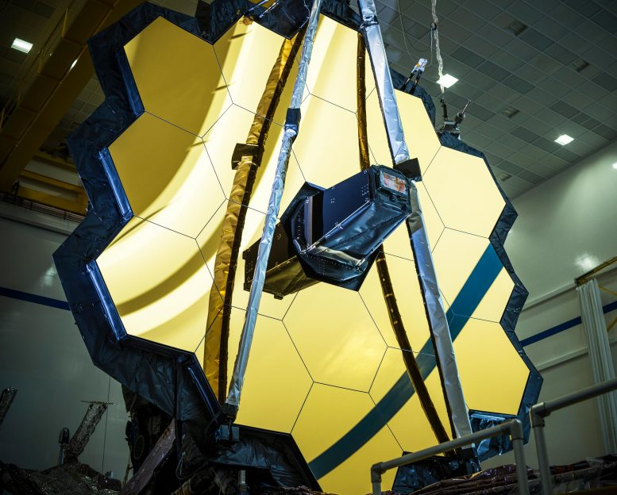

Testing Confirms Webb Telescope on Track for
Targeted Dec. 22 Launch
Engineering teams have completed additional testing confirming NASA’s James Webb
Space Telescope is ready for flight,and launch preparations are resuming toward Webb’s
target launch date of Wednesday, Dec. 22, at 7:20 a.m. EST.Additional testing was
conducted this week to ensure the observatory’s health following an incident that occurred
when the release of a clamp band caused a vibration throughout the observatory.
On Wednesday, Nov. 24, engineering teams completed these tests, and a NASA-led anomaly
review board concluded no observatory components were damaged in the incident.
A “consent to fuel” review was held, and NASA gave approval to begin fueling the observatory.
Fueling operations will begin Thursday, Nov. 25, and will take about 10 days.
